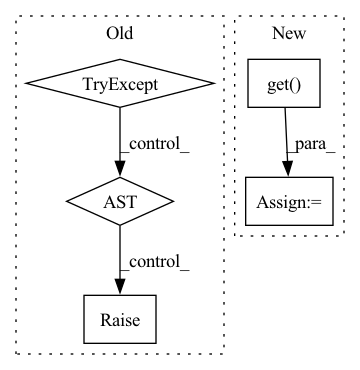

Pattern ID :3559
Before Change
if self._num_training_steps is None:
if self.trainer.train_dataloader is None:
try:
dataloader = self.train_dataloader()
except NotImplementedError:
raise RuntimeError(
"To use linear warmup cosine annealing lr"
"set the dataloader with .set_loaders(...)"
)After Change
else:
folder = None
no_labels = self.extra_args.get("no_labels", False)
data_fraction = self.extra_args.get( "data_fraction", -1.0)
dataset_size = compute_dataset_size(
dataset=dataset,
folder=folder,In pattern: SUPERPATTERN
Frequency: 4
Non-data size: 5
Instances Fragment ID: 13612901
Project Name: vturrisi/contrastive-learning
Commit Name: eb07a9c7c2872efb1ae83767f59a67fa616a7652
Time: 2022-05-02
Author: vt.turrisi@gmail.com
File Name: solo/methods/base.py
M Class Name: BaseMethod
N Class Name: BaseMethod
M Method Name: num_training_steps(1)
N Method Name: num_training_steps(1)
M Parent Class: pl.LightningModule
N Parent Class: pl.LightningModule
M File Name: solo/methods/base.py
N File Name: solo/methods/base.py
M Start Line: 383
M End Line: 392
N Start Line: 362
N End Line: 384
Before Change
if self.args.env:
self._envs.update(self.args.env)
try:
self.runtime = self._get_runtime_cls()(self.args) // type: "BaseRuntime"
except Exception as ex:
self.logger.error(
f"{ex!r} during {self.runtime_cls.__init__!r}"
+ f"\n add "--quiet-error" to suppress the exception details"
if not self.args.quiet_error
else "",
exc_info=not self.args.quiet_error,
)
raise RuntimeFailToStart from ex
def run(self):
Method representing the :class:`BaseRuntime` activity.After Change
def __init__(self, args: "argparse.Namespace"):
super().__init__() //: required here to call process/thread __init__
self.worker = {
RuntimeBackendType.THREAD: threading.Thread,
RuntimeBackendType.PROCESS: multiprocessing.Process,
}.get( getattr(args, "runtime_backend", RuntimeBackendType.THREAD)) (
target=self.run
)
self.args = args Fragment ID: 13612900
Project Name: jina-ai/jina
Commit Name: f1077597bc4ef70f57adfdb34442fe415ce7868e
Time: 2021-06-20
Author: joan.martinez@jina.ai
File Name: jina/peapods/peas/__init__.py
M Class Name: BasePea
N Class Name: BasePea
M Method Name: __init__(2)
N Method Name: __init__(2)
M Parent Class:
N Parent Class:
M File Name: jina/peapods/peas/__init__.py
N File Name: jina/peapods/peas/__init__.py
M Start Line: 31
M End Line: 65
N Start Line: 33
N End Line: 79
Before Change
return self._LANGUAGE_CODE_MAP[key]
def parse_language_codes(self, from_lang: str, to_lang: str) -> Tuple[str, str]:
try:
_from_lang = self._parse_language_code(from_lang) if from_lang != "auto" else "auto"
if not _from_lang:
raise KeyError(from_lang)
_to_lang = self._parse_language_code(to_lang)
if not _to_lang:
raise KeyError(to_lang)
return _from_lang, _to_lang
except KeyError as e:
print("Language not supported for chosen translator: "%s". Supported languages: "%s"" % (e, ",".join(self._LANGUAGE_CODE_MAP)))
raise e
async def translate(self, from_lang: str, to_lang: str, queries: List[str]) -> List[str]:
"""After Change
if not _from_lang:
raise LanguageUnsupportedException(from_lang, self.__class__.__name__, self.supported_src_languages)
_to_lang = self._LANGUAGE_CODE_MAP.get( to_lang, None)
if not _to_lang:
raise LanguageUnsupportedException(to_lang, self.__class__.__name__, self.supported_tgt_languages)
return _from_lang, _to_lang
Fragment ID: 13612898
Project Name: zyddnys/manga-image-translator
Commit Name: 68604f353ebf9c3b9cbe5a32dcdc5fb0d8a8743d
Time: 2022-11-01
Author: thatdudo@proton.me
File Name: translators/common.py
M Class Name: CommonTranslator
N Class Name: CommonTranslator
M Method Name: parse_language_codes(3)
N Method Name: parse_language_codes(3)
M Parent Class:
N Parent Class:
M File Name: translators/common.py
N File Name: translators/common.py
M Start Line: 23
M End Line: 35
N Start Line: 38
N End Line: 45
Before Change
if self._num_training_steps is None:
if self.trainer.train_dataloader is None:
try:
dataloader = self.train_dataloader()
except NotImplementedError:
raise RuntimeError(
"To use linear warmup cosine annealing lr"
"set the dataloader with .set_loaders(...)"
)After Change
else:
folder = None
no_labels = self.extra_args.get("no_labels", False)
data_fraction = self.extra_args.get( "data_fraction", -1.0)
dataset_size = compute_dataset_size(
dataset=dataset,
folder=folder, Fragment ID: 13612897
Project Name: vturrisi/contrastive-learning
Commit Name: eb07a9c7c2872efb1ae83767f59a67fa616a7652
Time: 2022-05-02
Author: vt.turrisi@gmail.com
File Name: solo/methods/linear.py
M Class Name: LinearModel
N Class Name: LinearModel
M Method Name: num_training_steps(1)
N Method Name: num_training_steps(1)
M Parent Class: pl.LightningModule
N Parent Class: pl.LightningModule
M File Name: solo/methods/linear.py
N File Name: solo/methods/linear.py
M Start Line: 199
M End Line: 208
N Start Line: 184
N End Line: 206